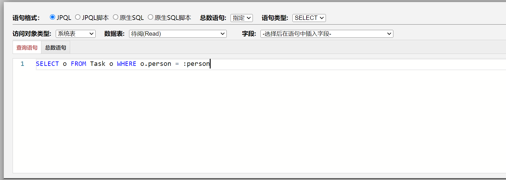
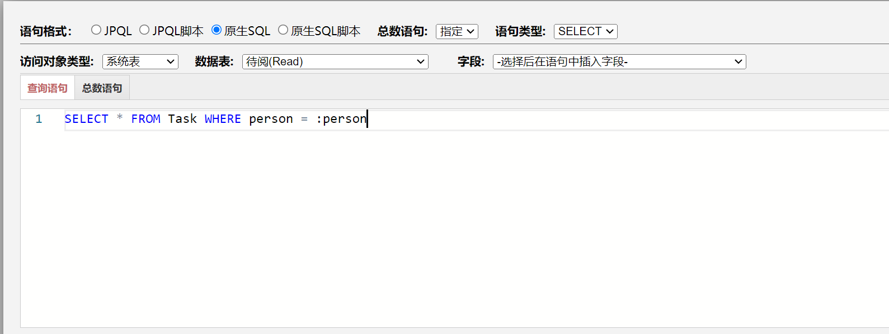
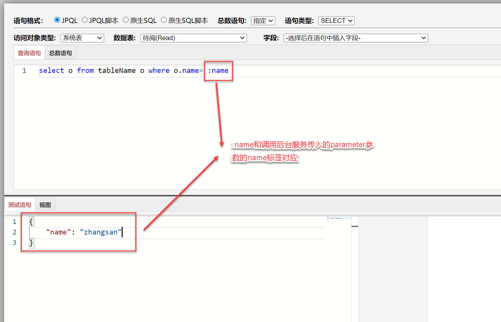
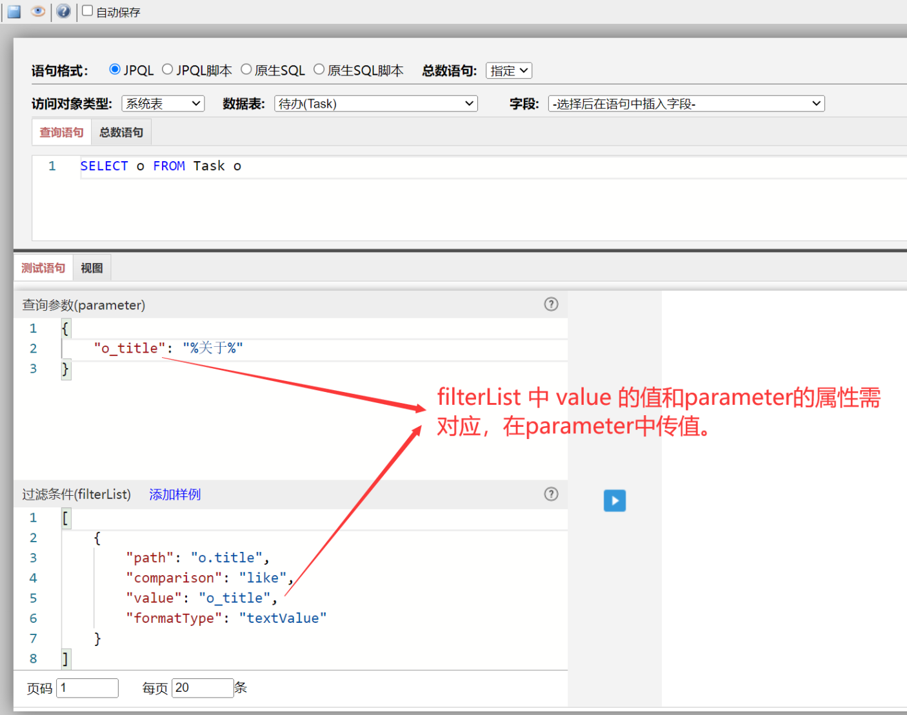
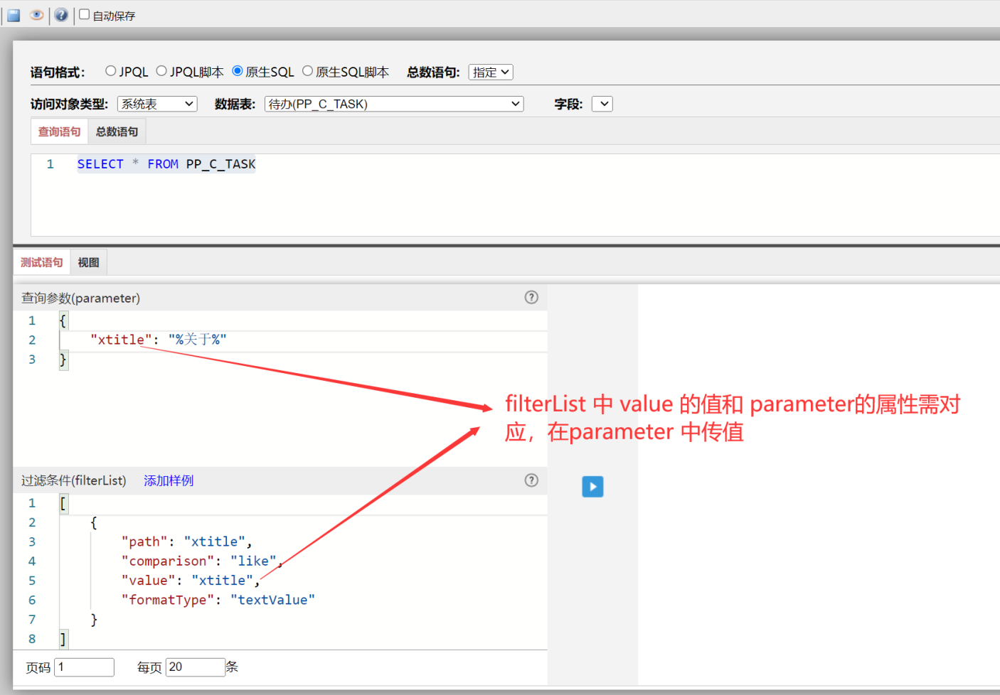

语法
1、JPQL语法
查询语句支持JPA JPQL语句，如下面的语句从系统表Task中获取待办：
SELECT o FROM Task o WHERE o.person = :person

JPQL官网：https://www.objectdb.com/java/jpa/query/jpql/structure
中文简介：https://www.codercto.com/a/4338.html
2、原生SQL语法
在v8.0及以后版本中，查询语句支持原生的SQL 语法，如下面的语句从系统表Task中获取待办：
SELECT * FROM PP_C_TASK WHERE xperson = :person

w3schoole网站：https://www.w3schools.com/sql/default.asp
中文网站：https://www.runoob.com/sql/sql-tutorial.html
3、表、字段和值的差异
| 差异项 | JPQL | SQL | 说明 |
|---|---|---|---|
| 系统表名 | Task TaskCompleted Read ReadCompleted Work WorkCompleted Review Document com.x.cms.core.entity.Review DocumentViewRecord DocumentCommentInfo |
PP_C_TASK PP_C_TASKCOMPLETED PP_C_READ PP_C_READCOMPLETED PP_C_WORK PP_C_WORKCOMPLETED PP_C_REVIEW CMS_DOCUMENT CMS_REVIEW CMS_DOCUMENT_VIEWRECORD CMS_DOCUMENT_COMMENTINFO |
待办 已办 待阅 已阅 流程实例 已完成流程实例 流程可阅读 内容管理文档 内容管理可阅读 内容管理阅读记录 内容管理评论记录 |
| 数据表名（自建表） | TableName | QRY_DYN_TABLENAME | 假如创建数据表设置的名称为“TableName”，则SQL取的名称为 "QRY_DYN_"前缀加名称的大写。 |
| 字段名 | id | xid | 字段以id为例，SQL的字段为"x"前缀加字段名。 |
| 值 | SELECT o FROM Task o WHERE o.person = '张三@zhangsan@P' 或 SELECT o FROM
Task o WHERE o.person = "张三@zhangsan@P" |
SELECT * FROM PP_C_TASK WHERE xperson = '张三@zhangsan@P' |
JPQL的值可以使用单引号和双引号，SQL只能使用单引号。建议都使用单引号。 |
where子句传参
1、用冒号动态传参
查询语句中的where语句的值可以使用json传入，如：
查询语句的设计为 ：
select o from tableName o where o.name=:n
在调用查询语句服务的时候传入 json：
{
"parameter": {
"n" : "zhangsan"
}
}
最终系统在后台根据这些设计拼接成为如下语句：
select o from tableName o where o.name='zhangsan'
如下图所示：

了解JPQL语句动态传参可以点击链接查看：https://www.objectdb.com/java/jpa/query/parameter
2、用问号和数字动态传参
在V8.0中，平台支持用问号加数字的形式来传where语句的值，作用和冒号动态传参类似，如：
查询语句的设计为 ：
select o from tableName o where o.name= ?1
在调用查询语句服务的时候传入 json：
{
"parameter": {
"?1" : "zhangsan"
}
}
最终系统在后台根据这些设计拼接成为如下语句：
select o from tableName o where o.name='zhangsan'
如下图所示：

3、默认参数
系统中有一些默认参数，对这些默认参数，系统会自动赋值。
| 默认参数 | 含义 | 类型 |
|---|---|---|
| person | 当前人 | 字符串 |
| identityList | 当前人身份列表 | 数组 |
| unitList | 当前人所在直接组织 | 数组 |
| unitAllList | 当前人所在所有组织 | 数组 |
| groupList | 当前人所在群组 | 数组 |
| roleList | 当前人拥有的角色 | 数组 |
如有如下语句：
select o from Task o where o.person = :person
参数:person为当前人，
在v8.0之前，外部传入参数 {person: ""}即可；
在v8.0之后，系统将自动解析这些默认参数，不需要再传入。
如当前人是张三@zhangsan@P，系统解析后自动拼接如下：
select o from Task o where o.person = "张三@zhangsan@P"
过滤条件
1、JPQL过滤条件
查询语句中的where语句的条件还可以从filterList传入，如有下列查询语句：
SELECT o FROM Task o
在调用查询语句的时候传入filterList
{
"filterList": [
{
"path":"o.title",
"comparison":"like",
"value":"o_title",
"formatType":"textValue"
}
],
"parameter": {
"o_title": "%关于%"
}
}
最终系统在后台根据这些设计拼接成为如下语句：
select o from Task o where o.title like '%关于%'
如下图所示：

2、原生SQL过滤条件
查询语句中的where语句的条件还可以从filterList传入，如有下列查询语句：
SELECT * FROM PP_C_TASK
在调用查询语句的时候传入filterList
{
"filterList": [
{
"path":"xtitle",
"comparison":"like",
"value":"xtitle",
"formatType":"textValue"
}
],
"parameter": {
"xtitle": "%关于%"
}
}
最终系统在后台根据这些设计拼接成为如下语句：
SELECT * FROM PP_C_TASK where xtitle like '%关于%'
如下图所示：

3、过滤条件参数说明
{
"filterList": [
{
"path":"o.title", //sql中使用xtitle
"comparison":"like",
"value":"o_title", //sql中使用xtitle
"formatType":"textValue"
}
],
"parameter": {
"o_title": "%关于%" //sql中使用xtitle
}
}
path
- String
- 要过滤的data数据的路径
在JPQL中形式为查询语句中的"表别名.字段名"，如"o.title"。
在SQL中形式为查询语句中的"字段名"，如"xtitle"。
comparison
- String
- 比较运算符，可选值：
equals 或 == ：表示等于。
notEquals 或 != ：表示不等于。
greaterThan 或 > ：表示大于。
greaterThanOrEqualTo 或 => ：表示大于或等于。
lessThan 或 < ：表示小于。
lessThanOrEqualTo 或 <= ：表示小于等于。
like ：表示部分匹配。
notLike ：表示不匹配。
in ：表示在某几个特定的值当中。
formatType
- String
- 过滤数据的数据类型，可选值：
textValue ：文本。
numberValue ：数字。
dateTimeValue ：日期时间。
dateValue ：仅日期。
timeValue ：仅时间。
booleanValue ：布尔值。
value
- String | Number | Boolean
- 过滤的值，根据formatType提供匹配的数据类型的值。
其他注意事项
1、日期格式的写法
在sql中，日期格式使用文本即可，如 :"2019-12-31", "23:59:59", "2020-01-03
13:59:59"。
在jpql中，对日期格式有特殊的写法，格式如下：
Date - {d 'yyyy-mm-dd'} - for example: {d '2019-12-31'}
Time - {t 'hh:mm:ss'} - for example: {t '23:59:59'}
Timestamp(DateTime) - {ts 'yyyy-mm-dd hh:mm:ss'} - for example: {ts '2020-01-03 13:59:59'}
示例如下图：

2、like的写法
如果运算符用的是 like，模糊查询，值为 "%{value}%"。